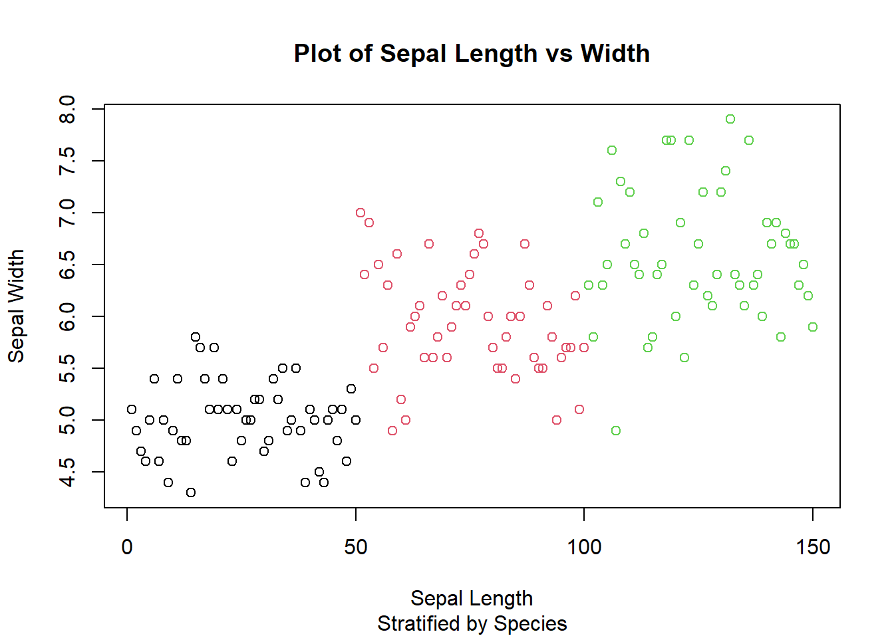
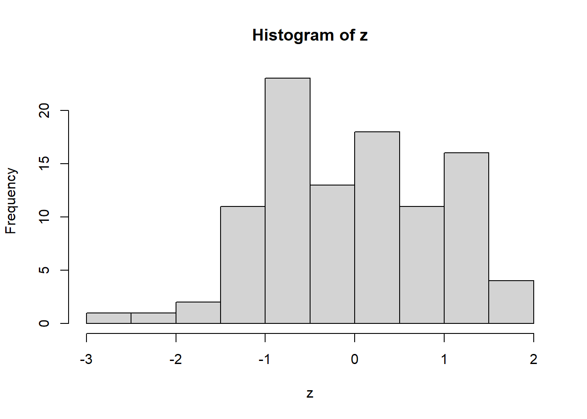
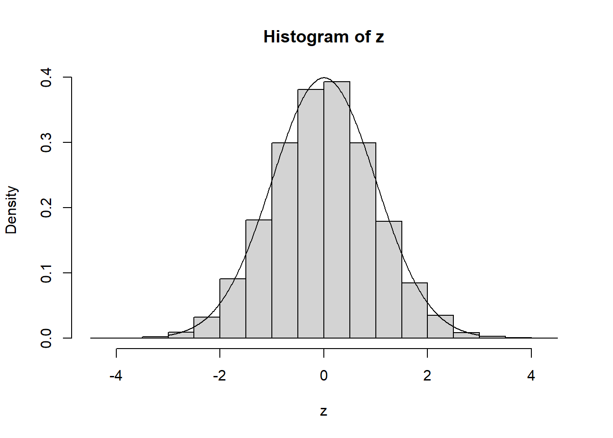

1 Introduction to R
1.1 R & RStudio
1.1.1 R

R is a programming language that is designed to work quickly and efficiently with large amounts of data, this is done through the unique way it processes this data. It is open source, meaning that other people from around the world can easily contribute code that you can use through add-ons, known as packages. Another reason for R’s popularity is that it (and the applications that run it) are free and (perhaps because it is free) the support online (from other ordinary users) is incredibly helpful.
1.1.2 RStudio

If you try to download R directly, you will also download a program called RGui. This is the default program for running R code. For what it does, RGui is fine. But we don’t want fine, we want GREAT! So we’re going to use another program called RStudio. RStudio organises your workspace a little bit better than the default RGui and allows for better interacticve help features which we’ll discuss later. Below is an example of what RStudio should look like.

The screenshow shows the four panes that we usually work with. Top-Left shows the Script, which is the code file we’re currently working in. Code written here won’t be run immediately, but it allows us to save code to be re-run later. Bottom-Left shows the Console, code written here will be run, so be careful what you type here. Top-Right is the Workspace, which shows the variables/data that RStudio is storing for us and that we can use. Bottom-Right shows the Viewer, which primarily displays Plots and Help. Of course there is a lot more going on here, but for the most part, these are the important bits.
Remember: R is the language and RStudio is the application, but you can’t use RStudio without R! (That said, I’m probably going to use the two interchangeably throughout)
1.1.3 Where to get them?
When you’re using an LJMU computer, you can search for “RStudio” in the LJMU Application Player to download it. This course is designed for use with RStudio 64 (with the circular logo). Elsewhere, you can download it from their webpage. As mentioned above, RStudio is free and will automatically install R as well.
1.1.4 First steps
When you first open RStudio, what you see won’t be like the screenshot. That’s because there is no Script open and so the Console fills the entire left side. It’s also filled with some information regarding licencing and the version of R you are currently running. The first step in RStudio is to create a new script. Go to File > New File > R Script (or press Ctrl + Shift + N on Windows or Cmd + Shift N on Mac). The Script pane should now appear with a tab called “Untitled 1”.
In the Console pane, type 2+2 and hit Enter.
## [1] 4RStudio just ran the code immediately. The [1] here just means that the 4 is the first result from what R has calculated (we’ll get on to that in a bit). Next, with the Console still selected, press up and RStudio will recall the previously run line of code. and you can change the code and you run it again
## [1] 5This time, in the Script pane, type pi+1, hightlight it and press Ctrl + Enter (or Cmd + Enter on Mac).
## [1] 4.141593This will automatically transfer the code into the Console and run it. Importantly, however the code is still in the Script pane, ready to be edited and/or used again.
Congratulations! You just did some coding!
1.2 Help
1.2.1 Help Files
For any problem you might have, your first port of call in RStudio is the ? symbol. R mostly works with functions (which we will get to prety soon), and so if you need help in RStudio, you can type a question mark followed by the name of that function and help will pop up in the Viewer pane
?mean1.2.2 Search
Next port of call should be Google/Ecosia/Bing or whatever your Search Engine of choice is. If you have a question that you need to know, type in “R” and then just ask that question to your search engine. I don’t mean try to phrase it in a certain way, I mean write the question exactly how you would ask it!
When you search for something, a lot of results will probably be tutorials on how to do what you’re trying to do. If what you’re asking is a common question, these will be good resources.
For more unusual questions, Stack Exchange is the most reliable forum for R answers. It is full of users who are more than willing to answer your difficult questions (some of them even enjoy it!)
1.2.3 Ask
Surprisingly enough, Statisticians love Twitter. If you have a question, just post it with the #RStats hashtag and you’ll probably get some reasonable responses. Or tweet it with #LJMU_MSIT and I will either reply or retweet it to more stats people.
Finally, the Maths, Stats & IT Team run regular Drop-In Sessions and One-To-Ones which you’re more than welcome to come by to. Just check out the Library Calendar to find a suitable session.
Remember, never feel like you’re asking a stupid question. If you don’t know the answer, just ask!
1.3 Vectorisation
1.3.1 Vectors
In mathematics, a vector is usually a set of ordered numbers which can be used to represent a point in 2/3D space. However, R uses vectors in a slightly different manner to essentially mean a list of data (although a list is a different thing in R). I can create a vector in R by using the c function and passing some numbers as arguments, separated by a comma.
## [1] 1 2 3I used a little bit of Jargon there, but to keep things clear. A function is a command that tells R to do something and an argument is the information or data you give to the function so it can do it’s job. Sometimes functions don’t need arguments:
## [1] "2020-06-09 20:11:02 BST"But the key to remember is that a function has brackets () right after it’s name.
And, a word of warning, R is Case Sensitive. This means you need to be careful that you use upper and lower case appropriately.
## Error in sys.time(): could not find function "sys.time"We’ve now created a vector of numbers but we’ve not done anything with these numbers. What is happening here:
## [1] 11 12 13In the jargon of R (and computer programming in general), the addition symbol (+) here is called an operator. Operators take something on the left and something on the right and do something with them. Here are several more and you should recognise most of them:
+ - * / < > ^ == != :In order: Addition (+), Subtraction (-), Multiplication (*), Division (/), Less Than (<), Greater Than (>), Exponentiation (^), Equivalency (==) (i.e. are these two things the same?) and Non-Equivalency (!=) (are these two things different?). The last one, is probably new to you. the : operator works with numbers to create a vector that runs from the first number to the second and is very useful for quickly creating big vectors.
## [1] 1 2 3 4 5 6 7 8 9 10 11 12 13 14 15 16 17 18
## [19] 19 20 21 22 23 24 25 26 27 28 29 30 31 32 33 34 35 36
## [37] 37 38 39 40 41 42 43 44 45 46 47 48 49 50 51 52 53 54
## [55] 55 56 57 58 59 60 61 62 63 64 65 66 67 68 69 70 71 72
## [73] 73 74 75 76 77 78 79 80 81 82 83 84 85 86 87 88 89 90
## [91] 91 92 93 94 95 96 97 98 99 100This also demonstrates what the [1] meant earlier. The element next to it is the first element. The next row here, shows [19], which means that 19 is the nineteenth element, and so on. This makes it easier, if you’re dealing with large data, to pinpoint where something might be wrong. Try running the code 1:1000 (either in the Console or the Script pane).
What do you think is happening here?
## [1] 1000what happens if you run the code length(1:(10^6))? And what about length(1:(10^15)). Try
## Error in 1:(10^16): result would be too long a vectorR doesn’t even try it. R knows its limits But it can make it up to 1015, which means that R created a vector that was 1015 elements long before figuring out its length. And it did it really quickly (because R is good with vectors)
1.3.2 Data Types
We’ve just learned about Vectors as lists(even though list means something else) of numbers. But Vectors can also be character vectors. Sometimes called strings, character vectors just means words:
## [1] "Hello" "World"Another basic data type in R is the logical, which represents TRUE or FALSE values.
## [1] TRUE FALSE FALSE FALSEHere, we created a vector of characters and then checked whether each of them (one-by-one) were equal to the character vector "red". Again, however, remember that R is Case Senstive:
## [1] FALSEWe can also multiply logical values by numeric values (i.e. numbers) and R will interpret a TRUE as being 1 and a FALSE as being 0.
1.3.3 Assignment
Consider the following line of code:
## [1] 1There are many steps happening here. First,the c function took in the two arguments "Hello" and "World", realised they were characters (rather than numbers), put them together into a vector (that’s its job) and then passed that vector as a single argument to the length function. Finally, we subtracted 1 from the result.
Now consider the following line of code:
## [1] 1Much easier to read and follow. We created the vector in the same way, but then we used the <- operator to put it in a box called x. On the next line, we put that box into the length function, and then subtracted the 1. This box is called a variable, and if you run this line of code, you’ll notice that the x variable now populated our Workspace pane in the Top-Right. The Workspace pane tells us the data type (chr is short for character) and we can tell that the length is 2 from the bit that says [1:2] (we’ll unravel this soon, too).
Being able to assign variables is a kay part of using R (and again, programming in general). Once these variables have been assigned, we can use them again and again, and re-assign them as and when we need, and even use them to re-assign themselves!
## [1] 4## [1] 5## [1] 31.3.4 Subsetting
Now, x in our Workspace pane is just a single number (not a vector). But we can obviously change that
We’re once again told it’s data type (this time its an int), and its length is 5 from the [1:5]. When we’re working with vectors, sometimes we need to grab out just some of the elements and not all of them. For this, we use extraction. If we want to pull out the third element of a vector, we enclose that number in square brackets, [ and ], to tell R that we are extracting data from a vector: x[3]. We can also pass a vector into the subsetting to grab more than one element:
## [1] 2 4 6And, since we can pass in a vector, think about what the following does.
## [1] 2 4 6The next easiest way to subset is to use a logical vector that is the same length as the vector we are subsetting, and R will return any element which is TRUE and ignore elements which are FALSE.
## [1] 2 4 10## [1] 2 10Finally, we can also subset to remove elements we’re not interested in
## [1] 2 4 8 10## [1] 2 8 10Assignment and Subsetting can also be combined to change certain elements in our vector
## [1] 2 4 2 8 10## [1] 2 4 2 0 0If we have a patrticularly large vector, we can also look at just the first 6 values, by using the function head() (or conversely, tails() to show us the last 6), as we’ll see in the next section.
Do you see what the [1:5] means in the Workspace pane? The 1:5 is the possible values that we can subset x with.
1.4 Statistics
1.4.1 Data
Now that we have the basics, we can move onto some statistical work using data. Normally, you would use a function such as read.csv() to read in our data. This function can read in data that is formatted as a csv file (or comma-separated). There are also ways to import more complicated data, such as from excel, but these don’t come built-in with R (we need additional stuff called packages to load other data).
An important note when loading data using read.csv() or a similar function is that the file directory needs to use forward slashes (/) rather than backward slashes (\). Basically, copy the folder directory, but replace the slashes:
dat <- read.csv("M:\Documents\My Data.csv") # This line won't work
dat <- read.csv("M:/Documents/My Data.csv") # This works!That’s how you get your data into R. Today, we’re going to begin by loading up a built in dataset, called iris, which is a dataset containing data about flowers.
## Sepal.Length Sepal.Width Petal.Length Petal.Width Species
## 1 5.1 3.5 1.4 0.2 setosa
## 2 4.9 3.0 1.4 0.2 setosa
## 3 4.7 3.2 1.3 0.2 setosa
## 4 4.6 3.1 1.5 0.2 setosa
## 5 5.0 3.6 1.4 0.2 setosa
## 6 5.4 3.9 1.7 0.4 setosaThe function data() can be used to load up a Built-in datasets (useful for examples and practising!). As previously said, head() now displays the first 6 rows of our data, which is a table (known in R as a data.frame).
Double click on iris in the Workspace and a new tab will open up in place of the Script pane. This shows the full table and allows us to scroll. There are five variables in iris: Sepal.Length, Sepal.Width, Petal.Length, Petal.Width and Species (note the capitalisation!).
Similar to a vector, we can subset in a data.frame using the square brackets, however since iris is a table, R needs two values, one for the row and a second for the column, separated by a comma (again, we can extract multiple rows/columns by using vectors)
## [1] 1.4## Sepal.Length Sepal.Width Petal.Length
## 1 5.1 3.5 1.4
## 2 4.9 3.0 1.4
## 3 4.7 3.2 1.3
## 4 4.6 3.1 1.5
## 5 5.0 3.6 1.4
## 6 5.4 3.9 1.7
## 7 4.6 3.4 1.4
## 8 5.0 3.4 1.5
## 9 4.4 2.9 1.4
## 10 4.9 3.1 1.5## Petal.Length Petal.Width Species
## 1 1.4 0.2 setosa
## 2 1.4 0.2 setosa
## 3 1.3 0.2 setosa
## 4 1.5 0.2 setosa
## 5 1.4 0.2 setosaThe way R structures data.frames is that each variable within the data.frame is it’s own vector of values with the restriction that all the vectors have to be the same length, i.e. the number of rows in the table. Which means, we can pull vectors out using the $ operator:
## [1] 5.1 4.9 4.7 4.6 5.0 5.4 4.6 5.0 4.4 4.9 5.4 4.8 4.8 4.3 5.8 5.7 5.4 5.1
## [19] 5.7 5.1 5.4 5.1 4.6 5.1 4.8 5.0 5.0 5.2 5.2 4.7 4.8 5.4 5.2 5.5 4.9 5.0
## [37] 5.5 4.9 4.4 5.1 5.0 4.5 4.4 5.0 5.1 4.8 5.1 4.6 5.3 5.0 7.0 6.4 6.9 5.5
## [55] 6.5 5.7 6.3 4.9 6.6 5.2 5.0 5.9 6.0 6.1 5.6 6.7 5.6 5.8 6.2 5.6 5.9 6.1
## [73] 6.3 6.1 6.4 6.6 6.8 6.7 6.0 5.7 5.5 5.5 5.8 6.0 5.4 6.0 6.7 6.3 5.6 5.5
## [91] 5.5 6.1 5.8 5.0 5.6 5.7 5.7 6.2 5.1 5.7 6.3 5.8 7.1 6.3 6.5 7.6 4.9 7.3
## [109] 6.7 7.2 6.5 6.4 6.8 5.7 5.8 6.4 6.5 7.7 7.7 6.0 6.9 5.6 7.7 6.3 6.7 7.2
## [127] 6.2 6.1 6.4 7.2 7.4 7.9 6.4 6.3 6.1 7.7 6.3 6.4 6.0 6.9 6.7 6.9 5.8 6.8
## [145] 6.7 6.7 6.3 6.5 6.2 5.9And these vectors can be used in the exact same way as other vectors, e.g
## [1] 3.5 3.0 3.2 3.1 3.6 3.9 3.4 3.4 2.9 3.1 3.7 3.4 3.0 3.0 4.0As previoiusly, we can also edit individual values (known as cells) within a dataset using the subsetting and assignment.
1.4.2 Describing our data
Here are a few functions that can be useful for describing your data:
mean(iris$Sepal.Length) #Gives the arithmetic mean of the variable Sepal.Length within the data.frame iris## [1] 5.843333## [1] 0.4358663##
## setosa versicolor virginica
## 50 50 50range(iris$Petal.Length) #Gets the minimum and maximum values, these can also be extracted using min() and max()## [1] 1.0 6.9If we want to find out the median and/or percentiles of a variable we use the quantile() function, and we can specify which percentiles we want to find in the vector. We do this by specifying the percentiles as decimal values (i.e. between 0 and 1) in another vector and pass both arguments to the function. Once again, remember we separate arguments by a comma.
## 5% 50% 95%
## 0.2 1.3 2.3We did not need to define Quantiles beforehand here, but it certainly makes the code look a little neater than this: quantiles(iris$Petal.Width,c(0.05,0.5,0.95)).
We can also combine subsetting to pull out descriptive statistics based on pre-requisites. What does this do?
## [1] 5.006From R’s perspective:
- Create a
logicalvector that is the same length as the vectoriris$Species(i.e. same as the number of rows in the table), to indicate whetheriris$Species == "setosa" - Pull out the subset of
iris$Sepal.Lengthsuch that the previous vector isTRUE - Calculate the mean of this vector.
R works from the inside outwards when it comes to functions like this. Not the most legible way to understand the code afterwards (but we’ll learn how to fix this next week!)
1.4.3 Plotting
The basic function for plotting in R is the plot() function, and is used very intuitively for scatter plots:
However, this is pretty boring. Let’s add some colour and give appropriate labels
plot(x = iris$Sepal.Length,
y = iris$SSepal.Width,
col = iris$Species,
main = "Plot of Sepal Length vs Width",
sub = "Stratified by Species",
xlab = "Sepal Length",
ylab = "Sepal Width",
)
Here, we changed the plot to use the variable Species as an indicator of which colur to use for each point. We could have just used col="red" to tell R to plot them all red, but that’s not as useful to distinguish!
We’ve done something new here, we supplied our arguments to the function as a named argument. This is because not all of these arguments are needed (see the previous one). If we don’t name them, R assumes the first argument is x and the second is y (which is a good assumption to make). However, since they’re not needed, we need to tell R which is which (it can’t rely on them being supplied in the same order everytime). If we don’t specify them, R will choose default values, which can be seen in the help file (?plot).
1.5 Probabilities
1.5.1 Data Distributions
Now that we can plot, it means we can visualise a key aspect of statistics: the probability density function (pdf) and the cumulative density function (cdf) of a probability distribution.To demonstrate, I’m going to use the Normal distribution.
The Normal distribution is one of the most commonly used distributions due to its symmetry and the fact that many natural variables can be modelled by it. The Standard Normal distribution is when the values have been standardised so that the mean is 0 and the sd is 1.
1.5.1.1 Density Function
x <- seq(-3,3,0.01) #Create a vector form -3 to 3 with steps of 0.01
y <- dnorm(x, mean=0, sd=1) #Here is the new function
plot(x, y, type="l",ylab="Density") # The argument type = "l" means we want a line plotThe function dnorm is the probability density function (pdf) for the Normal distribution, usually written as \(f(x)\). Higher density means more values are clustered around there and a lower density means there are less. the two arguments, mean and sd can be defined to match our data. For the Standard Normal, the pdf is defined by this nasty looking formula:
\[
f(x) = \frac{1}{\sqrt{2\pi}}e^{-\frac{1}{2}x^2}
\]
Let’s say we have a clinical trial with two arms; a control arm and a treatment arm. The treatment arm recieves a drug that may be able to reduce systolic blood pressure (SBP). After the trial is over, we are told that for the control arm, the mean SBP is 160 with an sd of 3 and the treatment arm has an SBP of 155 with an sd of 4. Assuming they are Normally distributed (a fair assumption if we have enough patients), then we can plot the density of the two distributions on the same plot
x <- seq(145, 170, 0.1) #Broad range of values to cover both groups
control.y <- dnorm(x, mean = 160, sd = 3) #Get the y values for the control arm
treat.y <- dnorm(x, mean = 155, sd = 4) #Get the y values for the treatment arm
plot(x,control.y,col="red",type="l",ylab="Density",xlab="SBP") #Remember what all these arguments do?
lines(x,treat.y,col="blue") #the lines() function *adds* a line to a previous plotLoooking at the two plots, there is a lot of overlap so it would be difficult to say that this drug works. What happens if you change the mean or sd for either of the arms?
1.5.1.2 Probability Function
The function pnorm is the cumulative density function (cdf), usually written as \(F(x)\). It is defined as the area under the pdf up to the value (i.e. its integral). It is used to find the probability that something is less than that value (assuming it follows a Normal Distribution).
\[
F(x) = \int_{-\infty}^x f(u) \;\textrm{d}u = \textrm{Prob}\left(X < x\right)
\]
This can answer questions such as: “If we assume the height of males at a university follows a Normal distribution with a mean of 175.5cm and a standard deviation of 6.5cm. What is the probability that a male student chosen at random is taller than 180cm?”
p <- pnorm(180, mean = 175.5, sd = 6.5) #This is the probability that a student is *shorter* than 180cm
1 - p #The probability that they are *taller* than 180cm## [1] 0.24437211.5.1.3 Quantile Function
p <- seq(0,1,0.01) #This time, we need the input to be between 0 and 1
y <- qnorm(p,mean = 0, sd = 1)
plot(p,y,type="l")The function qnorm() is the inverse of the pnorm() function. For a given probability, it can provide the associated value. From the previous example, what height are 95% of the students shorter than?
## [1] 186.1915So 95% of the male students in the school are shorter than 186.2cm.
1.5.1.4 Random Function
## [1] -1.0184620 -0.3896440 0.1468796 -0.4595894 -1.7630333 -1.0448115If you were to print out the z variable, you’d see 100 random numbers. The first argument we pass to the function rnorm() tells it how many random numbers to generate. These random numbers have been drawn from the Standard Normal distribution and so they will follow that distribution. We can see this with the following plot:

This histogram shows where all the values in the data in z lie. We group them into bins and then count how many are in each bin.
This histogram should roughly look like the pdf of the distribution. However, due to the random nature and the fact that there are only 100, it’s not very close to it’s underlying distribution. If we increase the number of random numbers to 10,000, it’ll look closer.
z <- rnorm(10000) #This time, we're not specifying the mean or sd for either rnorm or dnorm
x <- seq(-3,3,0.01)
y <- dnorm(x) # By default, R will use mean = 0 and sd = 1.
hist(z, probability = T) #This tells R that we want the probability of each bin, rather than the count (i.e. count/total)
lines(x,y)
1.5.1.4.1 Other Distributions
So far, for this section, we’ve used the Normal distribution. However, there is a whole bunch of other distributions that we could use, and they all follow the same formatting style:
dxxxx(x,...)gives the probability density function of the distribution atxpxxxx(x,...)gives the cumulative density function of the distribution atxqxxxx(p,...)gives the inverse of the cdf of the distribution atprxxxx(n,...)generatesnrandom numbers that follow the distribution
A few examples can be seen in the below plots: